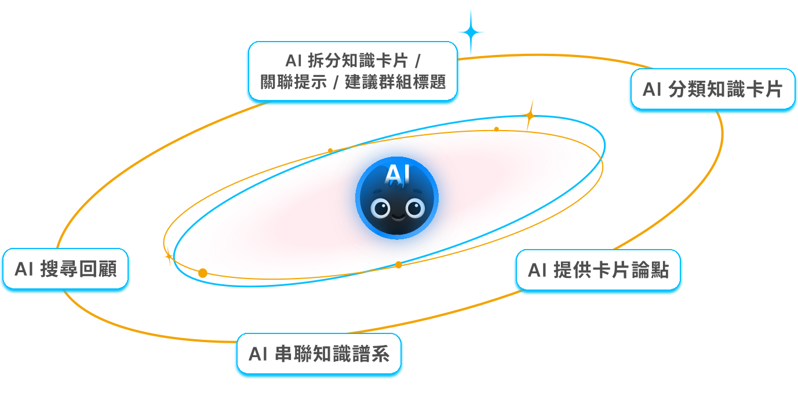

成果亮點
提出五大核心功能，讓知識連結更快，讓思考保持主動
整合串聯、分類、知識譜系、延伸與回顧等五大 AI 能力，協助使用者快速形成知識脈絡，並保持思考主動性

在 16 組取 8 組的決賽中，獲得團隊金獎 🥇
評審這麼說：
- 把 Chat bot 的型態撇除，讓 AI 融匯到編輯器的流程，是一件非常棒的設計決定。＂逐漸從單一對話介面工具變成協作夥伴＂
- 受眾輪廓的解析與選擇相當清楚，有從質性資料中找出共通問題，而非只停留在表層描述。
- 很重視通用設計，延續使用者在不同工具間切換的行為模式與操作邏輯，整合得相當自然。
企業主這麼說：
- 他們的提案從「空白白板」就能讓用戶感受到價值；多數組別則依賴「已有大量筆記」的情境。若設計必須等用戶累積內容後才發揮效果，對 Growth 與 Retention 的幫助其實有限。